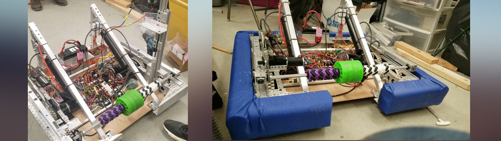

"Carry" - FRC 2020

2020 Game and Carry's Design
The 2020 game involved getting many yellow foam balls into elevated targets, manipulating a spinning color wheel, and hanging from a dynamic swinging pull-up bar with the rest of your team.
The game involved a lot of traversing the field to pick up objects, so optimized Carry for speed with six rubber wheels. Additionally, we kept Carry short enough to fit underneath the color wheel tables, to be able to utilize the fasted route from one side of the field to the other. We equipped the robot with a high reaching arm and a deployable hook capable of lifting the entire robot up several feet into the air.

The Lift
Carry was equipped with a multi-stage elevator for lifting the deployable hook. It could then lift up the entire robot onto the swinging pull-up bar, which was worth a lot of points in the competition.
The robot had a deployable spinner for manipulating the color wheel, which had to retract to be able to drive underneath the color wheel table. 

Intake
For picking up the foam balls, Carry had a pneumatically deployable intake bar, which had 3D-printed omniwheels on it that would direct balls from anywhere on the front edge toward the center to be intaked.